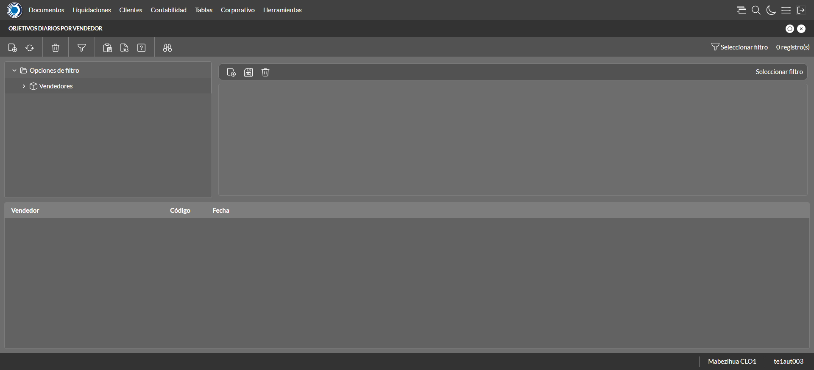
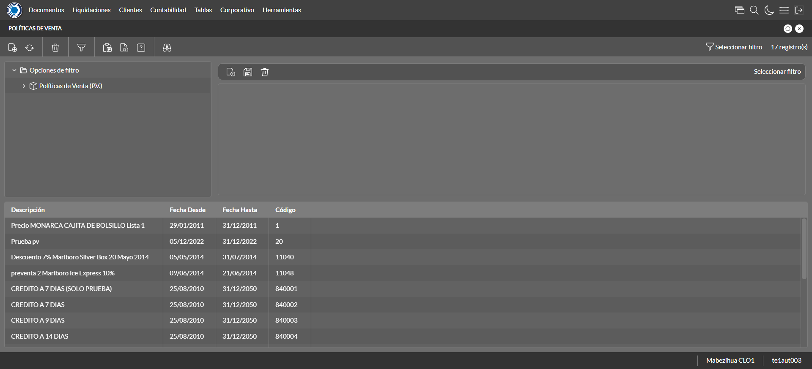
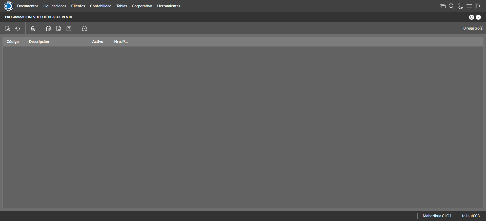
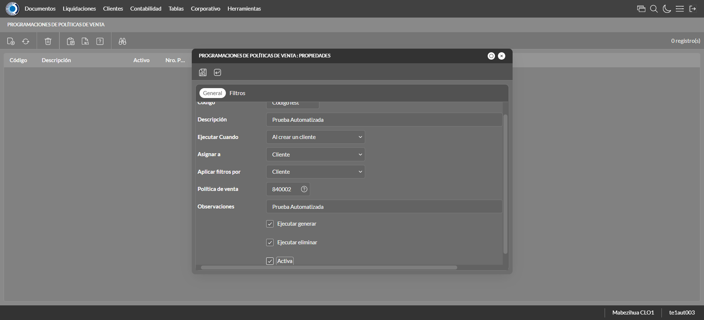

Desarrollado por : Area de Testing PWST
Fecha y hora de inicio : 2022-12-21 11:53:41
Duracion : 0:05:51.116817
Resultado : Total 47，Correctos 42 ，Errores 5 ，Taza de resultado 89.36%
Resumen 89.36% Errores 5 Fallidos 0 Correctos 42 Test realizados 47
| Caso de Prueba | Total | Correctos | Fallido | Error | Detalles | Captura del error |
| ScriptAmarillo.Test: Script Amarillo | 47 | 42 | 0 | 5 | Detalles | |
test |
ft1_1: 2022-12-21 11:53:43,514 - root - INFO - Se abre el chrome
2022-12-21 11:53:44,377 - root - INFO - Entra a la URL
2022-12-21 11:53:44,501 - root - INFO - Maximiza la pantalla
Traceback (most recent call last):
File "C:\Users\jsand\AppData\Local\Programs\Python\Python310\lib\site-packages\selenium-4.4.0-py3.10.egg\selenium\webdriver\remote\switch_to.py", line 87, in frame
frame_reference = self._driver.find_element(By.ID, frame_reference)
File "C:\Users\jsand\AppData\Local\Programs\Python\Python310\lib\site-packages\selenium-4.4.0-py3.10.egg\selenium\webdriver\remote\webdriver.py", line 856, in find_element
return self.execute(Command.FIND_ELEMENT, {
File "C:\Users\jsand\AppData\Local\Programs\Python\Python310\lib\site-packages\selenium-4.4.0-py3.10.egg\selenium\webdriver\remote\webdriver.py", line 434, in execute
self.error_handler.check_response(response)
File "C:\Users\jsand\AppData\Local\Programs\Python\Python310\lib\site-packages\selenium-4.4.0-py3.10.egg\selenium\webdriver\remote\errorhandler.py", line 243, in check_response
raise exception_class(message, screen, stacktrace)
selenium.common.exceptions.NoSuchElementException: Message: no such element: Unable to locate element: {"method":"css selector","selector":"[id="mainFrame"]"}
(Session info: chrome=108.0.5359.125)
Stacktrace:
Backtrace:
(No symbol) [0x00BFF243]
(No symbol) [0x00B87FD1]
(No symbol) [0x00A7D04D]
(No symbol) [0x00AAC0B0]
(No symbol) [0x00AAC22B]
(No symbol) [0x00ADE612]
(No symbol) [0x00AC85D4]
(No symbol) [0x00ADC9EB]
(No symbol) [0x00AC8386]
(No symbol) [0x00AA163C]
(No symbol) [0x00AA269D]
GetHandleVerifier [0x00E99A22+2655074]
GetHandleVerifier [0x00E8CA24+2601828]
GetHandleVerifier [0x00CA8C0A+619850]
GetHandleVerifier [0x00CA7830+614768]
(No symbol) [0x00B905FC]
(No symbol) [0x00B95968]
(No symbol) [0x00B95A55]
(No symbol) [0x00BA051B]
BaseThreadInitThunk [0x76796BD9+25]
RtlGetFullPathName_UEx [0x77B58FD2+1218]
RtlGetFullPathName_UEx [0x77B58F9D+1165]
During handling of the above exception, another exception occurred:
Traceback (most recent call last):
File "C:\Users\jsand\AppData\Local\Programs\Python\Python310\lib\site-packages\selenium-4.4.0-py3.10.egg\selenium\webdriver\remote\switch_to.py", line 90, in frame
frame_reference = self._driver.find_element(By.NAME, frame_reference)
File "C:\Users\jsand\AppData\Local\Programs\Python\Python310\lib\site-packages\selenium-4.4.0-py3.10.egg\selenium\webdriver\remote\webdriver.py", line 856, in find_element
return self.execute(Command.FIND_ELEMENT, {
File "C:\Users\jsand\AppData\Local\Programs\Python\Python310\lib\site-packages\selenium-4.4.0-py3.10.egg\selenium\webdriver\remote\webdriver.py", line 434, in execute
self.error_handler.check_response(response)
File "C:\Users\jsand\AppData\Local\Programs\Python\Python310\lib\site-packages\selenium-4.4.0-py3.10.egg\selenium\webdriver\remote\errorhandler.py", line 243, in check_response
raise exception_class(message, screen, stacktrace)
selenium.common.exceptions.NoSuchElementException: Message: no such element: Unable to locate element: {"method":"css selector","selector":"[name="mainFrame"]"}
(Session info: chrome=108.0.5359.125)
Stacktrace:
Backtrace:
(No symbol) [0x00BFF243]
(No symbol) [0x00B87FD1]
(No symbol) [0x00A7D04D]
(No symbol) [0x00AAC0B0]
(No symbol) [0x00AAC22B]
(No symbol) [0x00ADE612]
(No symbol) [0x00AC85D4]
(No symbol) [0x00ADC9EB]
(No symbol) [0x00AC8386]
(No symbol) [0x00AA163C]
(No symbol) [0x00AA269D]
GetHandleVerifier [0x00E99A22+2655074]
GetHandleVerifier [0x00E8CA24+2601828]
GetHandleVerifier [0x00CA8C0A+619850]
GetHandleVerifier [0x00CA7830+614768]
(No symbol) [0x00B905FC]
(No symbol) [0x00B95968]
(No symbol) [0x00B95A55]
(No symbol) [0x00BA051B]
BaseThreadInitThunk [0x76796BD9+25]
RtlGetFullPathName_UEx [0x77B58FD2+1218]
RtlGetFullPathName_UEx [0x77B58F9D+1165]
During handling of the above exception, another exception occurred:
Traceback (most recent call last):
File "C:\xampp\htdocs\versiones\automatizaciones\AutoPWST\ScriptAmarillo\testCase\ScriptAmarillo.py", line 97, in test
self.driver.switch_to.frame("mainFrame")
File "C:\Users\jsand\AppData\Local\Programs\Python\Python310\lib\site-packages\selenium-4.4.0-py3.10.egg\selenium\webdriver\remote\switch_to.py", line 92, in frame
raise NoSuchFrameException(frame_reference)
selenium.common.exceptions.NoSuchFrameException: Message: mainFrame
|
|
||||
test_000: Ingresa a la base de datos |
pt1_2: 2022-12-21 11:53:47,630 - root - INFO - Escribe el usuario
2022-12-21 11:53:47,694 - root - INFO - Escribe la contraseña
2022-12-21 11:53:47,754 - root - INFO - Se dio clic en el boton ingresar
2022-12-21 11:53:48,414 - root - INFO - Ejecutar Enterprise
2022-12-21 11:53:52,491 - root - INFO - Cambia entre pestañas
|
|
||||
test_001: Ingresa a pantalla Objetivos Diarios |
pt1_3: 2022-12-21 11:54:03,172 - root - INFO - Abre la pantalla de Objetivos Diarios
2022-12-21 11:54:03,726 - root - INFO - La pantalla ejecutada es Lista de precios.
2022-12-21 11:54:03,730 - root - INFO - Captura: C:\xampp\htdocs\versiones\automatizaciones\AutoPWST\ScriptAmarillo\report\img screen：20221221_11_54_03.png
2022-12-21 11:54:03,902 - root - INFO - Se presiona el boton 'Refrescar', para crear un nuevo registro igual al anterior.
2022-12-21 11:54:14,436 - root - INFO - Se presiona el boton 'Nuevo', para crear un nuevo registro.
|
 | ||||
test_002: Agregar Objetivos Diarios |
pt1_4: 2022-12-21 11:54:15,013 - root - INFO - Se abrio la pantalla para el ingreso de un registro nuevo.
2022-12-21 11:54:15,042 - root - INFO - El campo 'Vendedor' si se encuentra visible.
2022-12-21 11:54:15,069 - root - INFO - El campo 'Fecha' si se encuentra visible.
2022-12-21 11:54:15,099 - root - INFO - El campo 'Efectividad %' si se encuentra visible.
2022-12-21 11:54:16,649 - root - INFO - Ingresa la efectividad del nuevo registro
2022-12-21 11:54:18,666 - root - INFO - Captura: C:\xampp\htdocs\versiones\automatizaciones\AutoPWST\ScriptAmarillo\report\img screen：20221221_11_54_18.png
2022-12-21 11:54:18,897 - root - INFO - Se hace el cambio de pestaña para continuar con el registro nuevo
2022-12-21 11:54:19,465 - root - INFO - Se presiona el boton 'Nuevo', para crear un nuevo registro.
2022-12-21 11:54:20,022 - root - INFO - El campo 'Grupo Política' si se encuentra visible.
2022-12-21 11:54:20,077 - root - INFO - El campo 'Tipo Objetivo' si se encuentra visible.
2022-12-21 11:54:20,106 - root - INFO - El campo 'Tipo Unidad' si se encuentra visible.
2022-12-21 11:54:20,137 - root - INFO - El campo 'Objetivo Cantidad' si se encuentra visible.
2022-12-21 11:54:20,191 - root - INFO - El campo 'Objetivo Cobertura' si se encuentra visible.
2022-12-21 11:54:22,281 - root - INFO - Ingresa el Objetivo Cantidad del nuevo registro
2022-12-21 11:54:22,338 - root - INFO - Ingresa el Objetivo Cobertura del nuevo registro
2022-12-21 11:54:22,398 - root - INFO - Se da clic en el boton Guardar; se debe crear un nuevo registro.
2022-12-21 11:54:22,611 - root - INFO - Se da clic en el boton Guardar; se debe crear un nuevo registro.
|

|
||||
test_003: Repetir Registro Objetivos Diarios |
pt1_5: 2022-12-21 11:54:22,801 - root - INFO - Se presiona el boton 'Refrescar', para crear un nuevo registro igual al anterior.
2022-12-21 11:54:27,884 - root - INFO - Se presiona el boton 'Nuevo', para crear un nuevo registro igual al anterior.
2022-12-21 11:54:28,476 - root - INFO - Se abrio la pantalla para el ingreso de un registro nuevo.
2022-12-21 11:54:28,502 - root - INFO - El campo 'Vendedor' si se encuentra visible.
2022-12-21 11:54:28,526 - root - INFO - El campo 'Fecha' si se encuentra visible.
2022-12-21 11:54:28,553 - root - INFO - El campo 'Efectividad %' si se encuentra visible.
2022-12-21 11:54:30,028 - root - INFO - Ingresa la efectividad del nuevo registro
2022-12-21 11:54:30,097 - root - INFO - Se da clic en el boton Guardar; se debe crear un nuevo registro.
2022-12-21 11:54:32,098 - root - INFO - Captura: C:\xampp\htdocs\versiones\automatizaciones\AutoPWST\ScriptAmarillo\report\img screen：20221221_11_54_32.png
2022-12-21 11:54:32,312 - root - INFO - Se presiona el boton 'Cerrar', para cerrar el mensaje de duplicidad de llave primaria
2022-12-21 11:54:32,434 - root - INFO - Se presiona el boton 'Cerrar', para cerrar la ventana
|
|||||
test_004: Modifica Objetivos Diarios |
pt1_6: 2022-12-21 11:54:32,547 - root - INFO - Se presiona el boton 'Refrescar', para crear un nuevo registro igual al anterior.
2022-12-21 11:54:34,165 - root - INFO - Se da clic en el registro creado, para proceder a modificarlo.
2022-12-21 11:54:34,781 - root - INFO - Ingresa la efectividad del nuevo registro
2022-12-21 11:54:36,785 - root - INFO - Captura: C:\xampp\htdocs\versiones\automatizaciones\AutoPWST\ScriptAmarillo\report\img screen：20221221_11_54_36.png
2022-12-21 11:54:36,949 - root - INFO - Se hace el cambio de pestaña para continuar con el registro nuevo
2022-12-21 11:54:38,102 - root - INFO - Se da clic en el registro creado, para proceder a modificarlo.
2022-12-21 11:54:40,004 - root - INFO - Ingresa el Objetivo Cantidad del nuevo registro
2022-12-21 11:54:40,111 - root - INFO - Ingresa el Objetivo Cobertura del nuevo registro
2022-12-21 11:54:40,161 - root - INFO - Se da clic en el boton Guardar; se debe crear un nuevo registro.
2022-12-21 11:54:40,362 - root - INFO - Se da clic en el boton Guardar; se debe modificar la informacion del registro.
|

|
||||
test_005: Elimina Objetivos Diarios |
pt1_7: 2022-12-21 11:54:40,554 - root - INFO - Se presiona el boton 'Refrescar', para proceder a eliminar el registro.
2022-12-21 11:54:42,149 - root - INFO - Se da clic en el registro creado, para proceder a eliminarlo.
2022-12-21 11:54:42,204 - root - INFO - Se presiona el boton 'Eliminar', para eliminar el registro.
2022-12-21 11:54:44,220 - root - INFO - Captura: C:\xampp\htdocs\versiones\automatizaciones\AutoPWST\ScriptAmarillo\report\img screen：20221221_11_54_44.png
2022-12-21 11:54:44,417 - root - INFO - Se confirma el eliminado del registro
2022-12-21 11:54:44,659 - root - INFO - Se presiona el boton 'Refrescar', para crear un nuevo registro igual al anterior.
2022-12-21 11:54:44,870 - root - INFO - Se presiona el boton 'Cerrar', para cerrar la pantalla de Categorias Fiscales.
|

|
||||
test_006: Ingresa a pantalla Pop Ups |
pt1_8: 2022-12-21 11:54:45,816 - root - INFO - Abre la pantalla de PopUps
2022-12-21 11:54:46,400 - root - INFO - La pantalla ejecutada es PopUps.
2022-12-21 11:54:47,409 - root - INFO - Captura: C:\xampp\htdocs\versiones\automatizaciones\AutoPWST\ScriptAmarillo\report\img screen：20221221_11_54_47.png
2022-12-21 11:54:48,722 - root - INFO - Se ordenó por codigo.
2022-12-21 11:54:58,832 - root - INFO - Se presiona el boton 'Nuevo', para crear un nuevo registro.
|

|
||||
test_007: Agregar Pop Ups |
pt1_9: 2022-12-21 11:54:59,382 - root - INFO - Se abrio la pantalla para el ingreso de un registro nuevo.
2022-12-21 11:54:59,410 - root - INFO - El campo 'Codigo' si se encuentra visible.
2022-12-21 11:54:59,438 - root - INFO - El campo 'Orden' si se encuentra visible.
2022-12-21 11:54:59,465 - root - INFO - El campo 'Activo' si se encuentra visible.
2022-12-21 11:54:59,493 - root - INFO - El campo 'Descrición' si se encuentra visible.
2022-12-21 11:54:59,520 - root - INFO - El campo 'Modo Visualización' si se encuentra visible.
2022-12-21 11:54:59,547 - root - INFO - El campo 'Tipo Popup' si se encuentra visible.
2022-12-21 11:54:59,611 - root - INFO - El campo 'Fecha Desde' si se encuentra visible.
2022-12-21 11:54:59,640 - root - INFO - El campo 'Fecha Hasta' si se encuentra visible.
2022-12-21 11:54:59,667 - root - INFO - El campo 'Texto' si se encuentra visible.
2022-12-21 11:54:59,694 - root - INFO - El campo 'Seleccione Imagen' si se encuentra visible.
2022-12-21 11:54:59,739 - root - INFO - Ingresa el codigo del nuevo registro
2022-12-21 11:54:59,804 - root - INFO - Ingresa la orden del nuevo registro
2022-12-21 11:55:00,925 - root - INFO - Hizo click en el checkbox Activo
2022-12-21 11:55:01,093 - root - INFO - Ingresa la descripción del nuevo registro
2022-12-21 11:55:01,478 - root - INFO - Se dió click en la opción Pantalla Held.
2022-12-21 11:55:02,771 - root - INFO - Se dió doble click en el registro de Tipo Pop Up.
2022-12-21 11:55:02,947 - root - INFO - Ingresa el texto del nuevo registro
2022-12-21 11:55:03,953 - root - INFO - Captura: C:\xampp\htdocs\versiones\automatizaciones\AutoPWST\ScriptAmarillo\report\img screen：20221221_11_55_03.png
2022-12-21 11:55:04,146 - root - INFO - Se da clic en el boton Guardar; se debe crear un nuevo registro.
|

|
||||
test_008: Repetir Registro Pop Ups |
pt1_10: 2022-12-21 11:55:04,383 - root - INFO - Se presiona el boton 'Refrescar', para crear un nuevo registro igual al anterior.
2022-12-21 11:55:04,923 - root - INFO - Se presiona el boton 'Nuevo', para crear un nuevo registro igual al anterior.
2022-12-21 11:55:05,471 - root - INFO - Se abrio la pantalla para el ingreso de un registro nuevo.
2022-12-21 11:55:05,528 - root - INFO - El campo 'Codigo' si se encuentra visible.
2022-12-21 11:55:05,554 - root - INFO - El campo 'Orden' si se encuentra visible.
2022-12-21 11:55:05,578 - root - INFO - El campo 'Activo' si se encuentra visible.
2022-12-21 11:55:05,604 - root - INFO - El campo 'Descrición' si se encuentra visible.
2022-12-21 11:55:05,630 - root - INFO - El campo 'Modo Visualización' si se encuentra visible.
2022-12-21 11:55:05,655 - root - INFO - El campo 'Tipo Popup' si se encuentra visible.
2022-12-21 11:55:05,680 - root - INFO - El campo 'Fecha Desde' si se encuentra visible.
2022-12-21 11:55:05,705 - root - INFO - El campo 'Fecha Hasta' si se encuentra visible.
2022-12-21 11:55:05,747 - root - INFO - El campo 'Texto' si se encuentra visible.
2022-12-21 11:55:05,779 - root - INFO - El campo 'Seleccione Imagen' si se encuentra visible.
2022-12-21 11:55:05,819 - root - INFO - Ingresa el codigo del nuevo registro
2022-12-21 11:55:05,878 - root - INFO - Ingresa la orden del nuevo registro
2022-12-21 11:55:06,960 - root - INFO - Hizo click en el checkbox Activo
2022-12-21 11:55:07,142 - root - INFO - Ingresa la descripción del nuevo registro
2022-12-21 11:55:07,479 - root - INFO - Se dió click en la opción Pantalla Hand Held.
2022-12-21 11:55:08,661 - root - INFO - Se dió doble click en el registro de Tipo PopUp.
2022-12-21 11:55:08,861 - root - INFO - Ingresa el texto del nuevo registro
2022-12-21 11:55:08,904 - root - INFO - Se da clic en el boton Guardar; NO se debe crear un nuevo registro.
2022-12-21 11:55:09,918 - root - INFO - Captura: C:\xampp\htdocs\versiones\automatizaciones\AutoPWST\ScriptAmarillo\report\img screen：20221221_11_55_09.png
2022-12-21 11:55:10,172 - root - INFO - Se presiona el boton 'Cerrar', para cerrar el mensaje de duplicidad de llave primaria
2022-12-21 11:55:10,301 - root - INFO - Se presiona el boton 'Cerrar', para cerrar la ventana
|
|||||
test_009: Modifica Pop Ups |
pt1_11: 2022-12-21 11:55:10,411 - root - INFO - Se presiona el boton 'Refrescar', para proceder a modificar el registro.
2022-12-21 11:55:12,141 - root - INFO - Se dió dos veces click en el encabezado para modificar el orden de los registros.
2022-12-21 11:55:14,311 - root - INFO - Se da clic en el registro creado, para proceder a modificarlo.
2022-12-21 11:55:14,964 - root - INFO - Se modifica el contenido del campo Orden
2022-12-21 11:55:16,101 - root - INFO - Hizo click en el checkbox activo
2022-12-21 11:55:16,302 - root - INFO - Se modifica el contenido del campo Descripción
2022-12-21 11:55:16,667 - root - INFO - Se dió click en la opción Ambos.
2022-12-21 11:55:17,616 - root - INFO - Se dió doble click en el registro de Tipo PopUp.
2022-12-21 11:55:17,820 - root - INFO - Se modifica el contenido del campo Texto
2022-12-21 11:55:18,827 - root - INFO - Captura: C:\xampp\htdocs\versiones\automatizaciones\AutoPWST\ScriptAmarillo\report\img screen：20221221_11_55_18.png
2022-12-21 11:55:19,032 - root - INFO - Se da clic en el boton Guardar; se debe modificar la informacion del registro.
|

|
||||
test_010: Elimina PopUps |
pt1_12: 2022-12-21 11:55:19,293 - root - INFO - Se presiona el boton 'Refrescar', para proceder a eliminar el registro.
2022-12-21 11:55:20,918 - root - INFO - Se da clic en el registro creado, para proceder a eliminarlo.
2022-12-21 11:55:21,987 - root - INFO - Se presiona el boton 'Eliminar', para eliminar el registro.
2022-12-21 11:55:21,989 - root - INFO - Captura: C:\xampp\htdocs\versiones\automatizaciones\AutoPWST\ScriptAmarillo\report\img screen：20221221_11_55_21.png
2022-12-21 11:55:22,164 - root - INFO - Se confirma el eliminado del registro
2022-12-21 11:55:22,785 - root - INFO - Se presiona el boton 'Refrescar', para veriicar si el registro ha sido eliminado.
2022-12-21 11:55:23,291 - root - INFO - Se presiona el boton 'Cerrar', para cerrar la pantalla de Pop Ups.
|

|
||||
test_011: Ingresa a pantalla Paquetes Formulario |
pt1_13: 2022-12-21 11:55:24,225 - root - INFO - Abre la pantalla de Paquetes de Formularios
2022-12-21 11:55:24,774 - root - INFO - Captura: C:\xampp\htdocs\versiones\automatizaciones\AutoPWST\ScriptAmarillo\report\img screen：20221221_11_55_24.png
2022-12-21 11:55:24,889 - root - INFO - La pantalla ejecutada es Zonas de Ventas.
2022-12-21 11:55:35,488 - root - INFO - Se presiona el boton 'Nuevo', para crear un nuevo registro.
|

|
||||
test_012: Agregar Paquetes Formulario |
pt1_14: 2022-12-21 11:55:36,039 - root - INFO - Se abrio la pantalla para el ingreso de un registro nuevo.
2022-12-21 11:55:36,066 - root - INFO - El campo 'Número Paquete' si se encuentra visible.
2022-12-21 11:55:36,094 - root - INFO - El campo 'Formulario Inicial' si se encuentra visible.
2022-12-21 11:55:36,122 - root - INFO - El campo 'Cantidad Formularios' si se encuentra visible.
2022-12-21 11:55:37,175 - root - INFO - Captura: C:\xampp\htdocs\versiones\automatizaciones\AutoPWST\ScriptAmarillo\report\img screen：20221221_11_55_37.png
2022-12-21 11:55:37,318 - root - INFO - Ingresa la cantidad de formularios del nuevo registro
2022-12-21 11:55:37,366 - root - INFO - Se da clic en el boton Guardar; se debe crear un nuevo registro.
|

|
||||
test_013: Modifica Paquetes Formulario |
pt1_15: 2022-12-21 11:55:37,548 - root - INFO - Se presiona el boton 'Refrescar', para crear un nuevo registro igual al anterior.
2022-12-21 11:55:39,714 - root - INFO - Se da clic en el registro creado, para proceder a modificarlo.
2022-12-21 11:55:40,726 - root - INFO - Captura: C:\xampp\htdocs\versiones\automatizaciones\AutoPWST\ScriptAmarillo\report\img screen：20221221_11_55_40.png
2022-12-21 11:55:40,916 - root - INFO - Se presiona el boton 'Cerrar', para cerrar la ventana
|

|
||||
test_014: Elimina Paquetes Formulario |
pt1_16: 2022-12-21 11:55:41,016 - root - INFO - Se presiona el boton 'Refrescar', para proceder a eliminar el registro.
2022-12-21 11:55:42,627 - root - INFO - Se da clic en el registro creado, para proceder a eliminarlo.
2022-12-21 11:55:42,678 - root - INFO - Se presiona el boton 'Eliminar', para eliminar el registro.
2022-12-21 11:55:43,683 - root - INFO - Captura: C:\xampp\htdocs\versiones\automatizaciones\AutoPWST\ScriptAmarillo\report\img screen：20221221_11_55_43.png
2022-12-21 11:55:43,905 - root - INFO - Se confirma el eliminado del registro
2022-12-21 11:55:44,070 - root - INFO - Se presiona el boton 'Refrescar', para crear un nuevo registro igual al anterior.
2022-12-21 11:55:44,181 - root - INFO - Se presiona el boton 'Cerrar', para cerrar la pantalla de Categorias Fiscales.
|

|
||||
test_015: Ingresa a pantalla Perfiles Comision |
pt1_17: 2022-12-21 11:55:45,106 - root - INFO - Abre la pantalla de Perfiles de Comisión
2022-12-21 11:55:45,673 - root - INFO - La pantalla ejecutada es Perfiles de Comisión.
2022-12-21 11:55:45,675 - root - INFO - Captura: C:\xampp\htdocs\versiones\automatizaciones\AutoPWST\ScriptAmarillo\report\img screen：20221221_11_55_45.png
2022-12-21 11:55:55,849 - root - INFO - Se presiona el boton 'Nuevo', para crear un nuevo registro.
|

|
||||
test_016: Agregar Perfiles Comision |
pt1_18: 2022-12-21 11:55:56,424 - root - INFO - Se abrio la pantalla para el ingreso de un registro nuevo.
2022-12-21 11:55:56,454 - root - INFO - El campo 'Codigo' si se encuentra visible.
2022-12-21 11:55:56,481 - root - INFO - El campo 'Descrición' si se encuentra visible.
2022-12-21 11:55:56,530 - root - INFO - El campo 'Porcentaje Global' si se encuentra visible.
2022-12-21 11:55:56,566 - root - INFO - El campo 'Con impuesto' si se encuentra visible.
2022-12-21 11:55:56,621 - root - INFO - El campo 'Comisión Repartidor' si se encuentra visible.
2022-12-21 11:55:56,697 - root - INFO - Ingresa el codigo del nuevo registro
2022-12-21 11:55:56,779 - root - INFO - Ingresa la descripción del nuevo registro
2022-12-21 11:55:56,863 - root - INFO - Ingresa el Porcentaje Global del nuevo registro
2022-12-21 11:55:56,936 - root - INFO - Se hizó click en el Checkbox Con impuesto
2022-12-21 11:55:56,986 - root - INFO - Se hizó click en el checkbox Comisión Repartidor
2022-12-21 11:55:58,000 - root - INFO - Captura: C:\xampp\htdocs\versiones\automatizaciones\AutoPWST\ScriptAmarillo\report\img screen：20221221_11_55_57.png
2022-12-21 11:55:58,198 - root - INFO - Se hace el cambio a la pestaña Topes para continuar con el registro nuevo
2022-12-21 11:55:58,794 - root - INFO - Se presiona el boton 'Nuevo', para crear un nuevo registro de Topes.
2022-12-21 11:55:59,373 - root - INFO - El campo 'Moneda' si se encuentra visible.
2022-12-21 11:55:59,403 - root - INFO - El campo 'Tope' si se encuentra visible.
2022-12-21 11:55:59,430 - root - INFO - El campo 'Porcentaje' si se encuentra visible.
2022-12-21 11:56:00,329 - root - INFO - Se dió doble click en el registro de Moneda.
2022-12-21 11:56:00,409 - root - INFO - Ingresa el tope del nuevo registro
2022-12-21 11:56:00,502 - root - INFO - Ingresa el Porcentaje del nuevo registro
2022-12-21 11:56:00,573 - root - INFO - Se da clic en el boton Guardar; se debe crear un nuevo registro de Topes.
2022-12-21 11:56:00,733 - root - INFO - Se hace el cambio a la pestaña Cuenta Articulo para continuar con el registro nuevo
2022-12-21 11:56:01,306 - root - INFO - Se presiona el boton 'Nuevo', para crear un nuevo registro de Cuenta Articulo.
2022-12-21 11:56:01,877 - root - INFO - El campo 'Cuenta' si se encuentra visible.
2022-12-21 11:56:01,906 - root - INFO - El campo 'Artículo' si se encuentra visible.
2022-12-21 11:56:01,933 - root - INFO - El campo 'Porcentaje' si se encuentra visible.
2022-12-21 11:56:03,351 - root - INFO - Se dió doble click en el registro de Cuenta.
2022-12-21 11:56:04,420 - root - INFO - Se dió doble click en el registro de Articulo.
2022-12-21 11:56:04,512 - root - INFO - Ingresa el Porcentaje del nuevo registro
2022-12-21 11:56:04,598 - root - INFO - Se da clic en el boton Guardar; se debe crear un nuevo registro de Cuenta Articulo.
2022-12-21 11:56:04,835 - root - INFO - Se hace el cambio a la pestaña Cuentas para continuar con el registro nuevo
2022-12-21 11:56:05,451 - root - INFO - Se presiona el boton 'Nuevo', para crear un nuevo registro de Cuentas.
2022-12-21 11:56:06,031 - root - INFO - El campo 'Cuenta' si se encuentra visible.
2022-12-21 11:56:06,057 - root - INFO - El campo 'Porcentaje' si se encuentra visible.
2022-12-21 11:56:07,448 - root - INFO - Se dió doble click en el registro de Cuenta.
2022-12-21 11:56:07,533 - root - INFO - Ingresa el Porcentaje del nuevo registro
2022-12-21 11:56:07,618 - root - INFO - Se da clic en el boton Guardar; se debe crear un nuevo registro de Cuentas.
2022-12-21 11:56:07,818 - root - INFO - Se hace el cambio a la pestaña Articulos para continuar con el registro nuevo
2022-12-21 11:56:08,413 - root - INFO - Se presiona el boton 'Nuevo', para crear un nuevo registro de Articulos.
2022-12-21 11:56:08,971 - root - INFO - El campo 'Artículo' si se encuentra visible.
2022-12-21 11:56:09,008 - root - INFO - El campo 'Porcentaje' si se encuentra visible.
2022-12-21 11:56:10,434 - root - INFO - Se dió doble click en el registro de Articulo.
2022-12-21 11:56:10,521 - root - INFO - Ingresa el Porcentaje del nuevo registro
2022-12-21 11:56:10,601 - root - INFO - Se da clic en el boton Guardar; se debe crear un nuevo registro de Articulos.
2022-12-21 11:56:10,760 - root - INFO - Se hace el cambio a la pestaña Tipos de Documento para continuar con el registro nuevo
2022-12-21 11:56:11,344 - root - INFO - Se presiona el boton 'Nuevo', para crear un nuevo registro de Tipo Documento.
2022-12-21 11:56:11,897 - root - INFO - El campo 'Tipo Documento' si se encuentra visible.
2022-12-21 11:56:11,928 - root - INFO - El campo 'Origen' si se encuentra visible.
2022-12-21 11:56:11,958 - root - INFO - El campo 'Signo' si se encuentra visible.
2022-12-21 11:56:12,011 - root - INFO - El campo 'Cancelado' si se encuentra visible.
2022-12-21 11:56:12,899 - root - INFO - Se dió doble click en el registro de Tipo Documento.
2022-12-21 11:56:15,283 - root - INFO - Se dió click en la opción Backoffice.
2022-12-21 11:56:15,637 - root - INFO - Se dió click en la opción Suma.
2022-12-21 11:56:15,733 - root - INFO - Se dió click en el checkbox Cancelado.
2022-12-21 11:56:15,788 - root - INFO - Se da clic en el boton Guardar; se debe crear un nuevo registro de Tipos Documento.
2022-12-21 11:56:15,999 - root - INFO - Se da clic en el boton Guardar; se debe crear un nuevo registro.
|

|
||||
test_017: Repetir Registro Perfiles Comision |
pt1_19: 2022-12-21 11:56:16,246 - root - INFO - Se presiona el boton 'Refrescar', para crear un nuevo registro igual al anterior.
2022-12-21 11:56:16,434 - root - INFO - Se presiona el boton 'Nuevo', para crear un nuevo registro igual al anterior.
2022-12-21 11:56:16,976 - root - INFO - Se abrio la pantalla para el ingreso de un registro nuevo.
2022-12-21 11:56:17,004 - root - INFO - El campo 'Codigo' si se encuentra visible.
2022-12-21 11:56:17,073 - root - INFO - El campo 'Descrición' si se encuentra visible.
2022-12-21 11:56:17,103 - root - INFO - El campo 'Porcentaje Global' si se encuentra visible.
2022-12-21 11:56:17,132 - root - INFO - El campo 'Con impuesto' si se encuentra visible.
2022-12-21 11:56:17,161 - root - INFO - El campo 'Comisión Repartidor' si se encuentra visible.
2022-12-21 11:56:17,252 - root - INFO - Ingresa el codigo del nuevo registro
2022-12-21 11:56:17,337 - root - INFO - Ingresa la descripción del nuevo registro
2022-12-21 11:56:17,390 - root - INFO - Ingresa el Porcentaje Global del nuevo registro
2022-12-21 11:56:17,438 - root - INFO - Se hizó click en el Checkbox Con impuesto
2022-12-21 11:56:17,511 - root - INFO - Se hizó click en el checkbox Comisión Repartidor
2022-12-21 11:56:17,593 - root - INFO - Se da clic en el boton Guardar; No se debe crear un nuevo registro.
2022-12-21 11:56:18,597 - root - INFO - Captura: C:\xampp\htdocs\versiones\automatizaciones\AutoPWST\ScriptAmarillo\report\img screen：20221221_11_56_18.png
2022-12-21 11:56:18,850 - root - INFO - Se presiona el boton 'Cerrar', para cerrar el mensaje de duplicidad de llave primaria
2022-12-21 11:56:18,986 - root - INFO - Se presiona el boton 'Cerrar', para cerrar la ventana
|
|||||
test_018: Modifica Perfiles Comision |
pt1_20: 2022-12-21 11:56:19,094 - root - INFO - Se presiona el boton 'Refrescar', para proceder a modificar el registro.
2022-12-21 11:56:20,698 - root - INFO - Se da doble click en el registro creado, para proceder a modificarlo.
2022-12-21 11:56:21,344 - root - INFO - Se modifica el contenido del campo Descripción
2022-12-21 11:56:21,426 - root - INFO - Se modifica el contenido del campo Porcentaje Global
2022-12-21 11:56:21,477 - root - INFO - Se hizó click en el checkbox Con impuesto
2022-12-21 11:56:21,528 - root - INFO - Se hizó click en el checkbox Comisión Repartidor
2022-12-21 11:56:23,539 - root - INFO - Captura: C:\xampp\htdocs\versiones\automatizaciones\AutoPWST\ScriptAmarillo\report\img screen：20221221_11_56_23.png
2022-12-21 11:56:23,709 - root - INFO - Se da clic en el boton Guardar; se debe modificar la informacion del registro.
|

|
||||
test_019: Elimina Perfiles Comision |
pt1_21: 2022-12-21 11:56:24,192 - root - INFO - Se presiona el boton 'Refrescar', para proceder a eliminar el registro.
2022-12-21 11:56:25,792 - root - INFO - Se da clic en el registro creado, para proceder a eliminarlo.
2022-12-21 11:56:26,878 - root - INFO - Se da clic en la ventana de tope, para proceder a eliminarlo.
2022-12-21 11:56:27,948 - root - INFO - Se da clic en el tope creado, para proceder a eliminarlo.
2022-12-21 11:56:28,571 - root - INFO - Se da clic en la ventana cuenta/articulo, para proceder a eliminarlo.
2022-12-21 11:56:29,647 - root - INFO - Se da clic en la cuenta/articulo creado, para proceder a eliminarlo.
2022-12-21 11:56:30,270 - root - INFO - Se da clic en la ventana cuentas, para proceder a eliminarlo.
2022-12-21 11:56:31,338 - root - INFO - Se da clic en la cuenta creado, para proceder a eliminarlo.
2022-12-21 11:56:31,949 - root - INFO - Se da clic en la cuenta/articulo creado, para proceder a eliminarlo.
2022-12-21 11:56:33,023 - root - INFO - Se da clic en el articulo creado, para proceder a eliminarlo.
2022-12-21 11:56:33,633 - root - INFO - Se da clic en la ventana tipo documento, para proceder a eliminarlo.
2022-12-21 11:56:34,701 - root - INFO - Se da clic en el tipo de documento creado, para proceder a eliminarlo.
2022-12-21 11:56:34,881 - root - INFO - Se da clic en el boton Guardar; se debe crear un nuevo registro.
2022-12-21 11:56:35,431 - root - INFO - Se da clic en el registro creado, para proceder a eliminarlo.
2022-12-21 11:56:35,480 - root - INFO - Se presiona el boton 'Eliminar', para eliminar el registro.
2022-12-21 11:56:35,481 - root - INFO - Captura: C:\xampp\htdocs\versiones\automatizaciones\AutoPWST\ScriptAmarillo\report\img screen：20221221_11_56_35.png
2022-12-21 11:56:35,698 - root - INFO - Se confirma el eliminado del registro
2022-12-21 11:56:35,859 - root - INFO - Se presiona el boton 'Refrescar', para verificar que el registro se ha eliminado.
2022-12-21 11:56:35,979 - root - INFO - Se presiona el boton 'Cerrar', para cerrar la pantalla de Perfiles de Comisión.
|
|||||
test_020: Ingresa a pantalla Politicas de Venta |
pt1_22: 2022-12-21 11:56:36,866 - root - INFO - Abre la pantalla de Politicas de Venta
2022-12-21 11:56:37,437 - root - INFO - La pantalla ejecutada es Politicas de Venta
2022-12-21 11:56:38,443 - root - INFO - Captura: C:\xampp\htdocs\versiones\automatizaciones\AutoPWST\ScriptAmarillo\report\img screen：20221221_11_56_38.png
2022-12-21 11:56:48,942 - root - INFO - Se presiona el boton 'Nuevo', para crear un nuevo registro.
|
 | ||||
test_021: Agregar Perfiles Politicas de Venta |
ft1_23: 2022-12-21 11:56:49,534 - root - INFO - Se abrio la pantalla para el ingreso de un registro nuevo.
2022-12-21 11:56:49,567 - root - INFO - El campo 'Codigo' si se encuentra visible.
2022-12-21 11:56:49,595 - root - INFO - El campo 'Codigo Alternativo' si se encuentra visible.
2022-12-21 11:56:49,625 - root - INFO - El campo 'Descrición' si se encuentra visible.
2022-12-21 11:56:49,654 - root - INFO - El campo 'Moneda' si se encuentra visible.
2022-12-21 11:56:49,683 - root - INFO - El campo 'Aplicable en' si se encuentra visible.
2022-12-21 11:56:49,712 - root - INFO - El campo 'Activa' si se encuentra visible.
2022-12-21 11:56:49,742 - root - INFO - El campo 'Aplicación Global' si se encuentra visible.
2022-12-21 11:56:49,794 - root - INFO - Ingresa el codigo del nuevo registro
2022-12-21 11:56:49,889 - root - INFO - Ingresa el codigo alternativo del nuevo registro
2022-12-21 11:56:50,017 - root - INFO - Ingresa la descripción del nuevo registro
2022-12-21 11:56:50,897 - root - INFO - Se dió doble click en el registro de Moneda.
2022-12-21 11:56:51,343 - root - INFO - Se dió click en la opción BackOffice y Mobile.
2022-12-21 11:56:52,402 - root - INFO - Se dió click en el checkbox Activa.
2022-12-21 11:56:52,459 - root - INFO - Se dió click en el checkbox Aplicación Global.
2022-12-21 11:56:52,506 - root - INFO - Se hace el cambio a la pestaña Por Articulo para continuar con el registro nuevo
2022-12-21 11:56:53,125 - root - INFO - Se presiona el boton 'Nuevo', para crear un nuevo registro de Por Articulo.
2022-12-21 11:56:53,717 - root - INFO - El campo 'Artículo' si se encuentra visible.
2022-12-21 11:56:53,748 - root - INFO - El campo 'Artículo a Bonificar' si se encuentra visible.
2022-12-21 11:56:53,777 - root - INFO - El campo 'Cantidad a Bonificar(Packing)' si se encuentra visible.
2022-12-21 11:56:53,806 - root - INFO - El campo 'Cantidad en Bonificación(Unidad)' si se encuentra visible.
2022-12-21 11:56:53,835 - root - INFO - El campo 'Tope Descuento 1' si se encuentra visible.
2022-12-21 11:56:53,868 - root - INFO - El campo 'Tope Descuento 2' si se encuentra visible.
2022-12-21 11:56:53,948 - root - INFO - Ingresa el Articulo del nuevo registro
2022-12-21 11:56:54,031 - root - INFO - Ingresa el Articulo a bonificar del nuevo registro
2022-12-21 11:56:54,114 - root - INFO - Ingresa la Cantidad a Bonificar del nuevo registro
2022-12-21 11:56:54,189 - root - INFO - Ingresa la Cantidad en Bonificación del nuevo registro
2022-12-21 11:56:54,287 - root - INFO - Ingresa el Tope Descuento 1 del nuevo registro
2022-12-21 11:56:54,443 - root - INFO - Ingresa el Tope Descuento 2 del nuevo registro
2022-12-21 11:56:55,459 - root - INFO - Captura: C:\xampp\htdocs\versiones\automatizaciones\AutoPWST\ScriptAmarillo\report\img screen：20221221_11_56_55.png
2022-12-21 11:56:55,692 - root - INFO - Se presiona el boton 'Guardar', para guardar el registro de Por Articulo.
2022-12-21 11:56:56,832 - root - ERROR - No se dió click en el botón Guardar, validar que la acción anterior haya finalizado, que el xpath sea el correcto o que la página no presente lentitud
2022-12-21 11:56:57,838 - root - INFO - Captura: C:\xampp\htdocs\versiones\automatizaciones\AutoPWST\ScriptAmarillo\report\img screen：20221221_11_56_57.png
2022-12-21 11:57:03,243 - root - INFO - Se presiona el boton 'Cerrar', para cerrar la ventana modal.
2022-12-21 11:57:03,369 - root - INFO - Se presiona el boton 'Cerrar', para cerrar la ventana modal.
2022-12-21 11:57:03,492 - root - INFO - Se presiona el boton 'Cerrar', para cerrar la pantalla.
Traceback (most recent call last):
File "C:\xampp\htdocs\versiones\automatizaciones\AutoPWST\ScriptAmarillo\testCase\ScriptAmarillo.py", line 1008, in test_021
raise Exception()
Exception
|

|
||||
test_022: Repetir Registro Politicas de Venta |
ft1_24: 2022-12-21 11:57:03,493 - root - ERROR - La pantalla anterior fallo por lo que esta no funcionara, para mas detalles del error consulte el reporte
Traceback (most recent call last):
File "C:\xampp\htdocs\versiones\automatizaciones\AutoPWST\ScriptAmarillo\testCase\ScriptAmarillo.py", line 1058, in test_022
raise Exception()
Exception
|
|
||||
test_023: Modifica Politicas de Venta |
ft1_25: 2022-12-21 11:57:03,494 - root - ERROR - La pantalla anterior fallo por lo que esta no funcionara, para mas detalles del error consulte el reporte
Traceback (most recent call last):
File "C:\xampp\htdocs\versiones\automatizaciones\AutoPWST\ScriptAmarillo\testCase\ScriptAmarillo.py", line 1105, in test_023
raise Exception()
Exception
|
|
||||
test_024: Elimina Politicas de Venta |
ft1_26: 2022-12-21 11:57:03,494 - root - ERROR - La pantalla anterior fallo por lo que esta no funcionara, para mas detalles del error consulte el reporte
Traceback (most recent call last):
File "C:\xampp\htdocs\versiones\automatizaciones\AutoPWST\ScriptAmarillo\testCase\ScriptAmarillo.py", line 1152, in test_024
raise Exception()
Exception
|
|
||||
test_025: Ingresa a pantalla Modelos de Liquidacion |
pt1_27: 2022-12-21 11:57:03,719 - root - INFO - El nombre de la pantalla para la automatización
2022-12-21 11:57:05,086 - root - INFO - La pantalla ejecutada es GRUPO DE POLÍTICAS AD HOC.
2022-12-21 11:57:05,086 - root - INFO - Captura: C:\xampp\htdocs\versiones\automatizaciones\AutoPWST\ScriptAmarillo\report\img screen：20221221_11_57_05.png
2022-12-21 11:57:05,277 - root - INFO - Se presiona el boton 'Nuevo', para crear un nuevo registro.
|

|
||||
test_026: Agregar Perfiles Modelos de Liquidacion |
pt1_28: 2022-12-21 11:57:05,815 - root - INFO - Se abrio la pantalla para el ingreso de un registro nuevo.
2022-12-21 11:57:05,845 - root - INFO - El campo 'Codigo' si se encuentra visible.
2022-12-21 11:57:05,875 - root - INFO - El campo 'Código Alternativo' si se encuentra visible.
2022-12-21 11:57:05,906 - root - INFO - El campo 'Descrición' si se encuentra visible.
2022-12-21 11:57:05,968 - root - INFO - Ingresa el codigo del nuevo registro
2022-12-21 11:57:06,047 - root - INFO - Ingresa el codigo alternativo del nuevo registro
2022-12-21 11:57:06,160 - root - INFO - Ingresa la descripción del nuevo registro
2022-12-21 11:57:08,162 - root - INFO - Captura: C:\xampp\htdocs\versiones\automatizaciones\AutoPWST\ScriptAmarillo\report\img screen：20221221_11_57_08.png
2022-12-21 11:57:08,330 - root - INFO - Se da clic en el boton Guardar; se debe crear un nuevo registro.
|
|||||
test_027: Repetir Registro Modelos de Liquidacion |
pt1_29: 2022-12-21 11:57:08,516 - root - INFO - Se presiona el boton 'Refrescar', para crear un nuevo registro igual al anterior.
2022-12-21 11:57:08,627 - root - INFO - Se presiona el boton 'Nuevo', para crear un nuevo registro igual al anterior.
2022-12-21 11:57:09,177 - root - INFO - Se abrio la pantalla para el ingreso de un registro nuevo.
2022-12-21 11:57:09,209 - root - INFO - El campo 'Codigo' si se encuentra visible.
2022-12-21 11:57:09,238 - root - INFO - El campo 'Código Alternativo' si se encuentra visible.
2022-12-21 11:57:09,268 - root - INFO - El campo 'Descrición' si se encuentra visible.
2022-12-21 11:57:09,328 - root - INFO - Ingresa el codigo del nuevo registro
2022-12-21 11:57:09,401 - root - INFO - Ingresa el codigo alternativo del nuevo registro
2022-12-21 11:57:09,499 - root - INFO - Ingresa la descripción del nuevo registro
2022-12-21 11:57:09,560 - root - INFO - Se da clic en el boton Guardar; se debe crear un nuevo registro.
2022-12-21 11:57:11,563 - root - INFO - Captura: C:\xampp\htdocs\versiones\automatizaciones\AutoPWST\ScriptAmarillo\report\img screen：20221221_11_57_11.png
2022-12-21 11:57:11,776 - root - INFO - Se presiona el boton 'Cerrar', para cerrar el mensaje de duplicidad de llave primaria
2022-12-21 11:57:11,885 - root - INFO - Se presiona el boton 'Cerrar', para cerrar la ventana
|
|||||
test_028: Modifica Modelos de Liquidacion |
pt1_30: 2022-12-21 11:57:12,015 - root - INFO - Se presiona el boton 'Refrescar', para crear un nuevo registro igual al anterior.
2022-12-21 11:57:13,623 - root - INFO - Se da clic en el registro creado, para proceder a modificarlo.
2022-12-21 11:57:14,252 - root - INFO - Ingresa el codigo alternativo del nuevo registro
2022-12-21 11:57:14,369 - root - INFO - Se modifica el contenido del campo Descripcion
2022-12-21 11:57:16,378 - root - INFO - Captura: C:\xampp\htdocs\versiones\automatizaciones\AutoPWST\ScriptAmarillo\report\img screen：20221221_11_57_16.png
2022-12-21 11:57:16,539 - root - INFO - Se da clic en el boton Guardar; se debe modificar la informacion del registro.
|

|
||||
test_029: Elimina Modelos de Liquidacion |
pt1_31: 2022-12-21 11:57:16,699 - root - INFO - Se presiona el boton 'Refrescar', para proceder a eliminar el registro.
2022-12-21 11:57:18,284 - root - INFO - Se da clic en el registro creado, para proceder a eliminarlo.
2022-12-21 11:57:18,332 - root - INFO - Se presiona el boton 'Eliminar', para eliminar el registro.
2022-12-21 11:57:20,347 - root - INFO - Captura: C:\xampp\htdocs\versiones\automatizaciones\AutoPWST\ScriptAmarillo\report\img screen：20221221_11_57_20.png
2022-12-21 11:57:20,545 - root - INFO - Se confirma el eliminado del registro
2022-12-21 11:57:20,663 - root - INFO - Se presiona el boton 'Refrescar', para crear un nuevo registro igual al anterior.
2022-12-21 11:57:20,809 - root - INFO - Se presiona el boton 'Cerrar', para cerrar la pantalla de Categorias Fiscales.
|

|
||||
test_030: Ingresa a pantalla Politicas AdHoc |
pt1_32: 2022-12-21 11:57:21,022 - root - INFO - El nombre de la pantalla para la automatización
2022-12-21 11:57:22,383 - root - INFO - La pantalla ejecutada es GRUPO DE POLÍTICAS AD HOC.
2022-12-21 11:57:22,383 - root - INFO - Captura: C:\xampp\htdocs\versiones\automatizaciones\AutoPWST\ScriptAmarillo\report\img screen：20221221_11_57_22.png
2022-12-21 11:57:22,592 - root - INFO - Se presiona el boton 'Nuevo', para crear un nuevo registro.
|

|
||||
test_031: Agregar Perfiles Politicas AdHoc |
pt1_33: 2022-12-21 11:57:23,149 - root - INFO - Se abrio la pantalla para el ingreso de un registro nuevo.
2022-12-21 11:57:23,181 - root - INFO - El campo 'Codigo' si se encuentra visible.
2022-12-21 11:57:23,213 - root - INFO - El campo 'Código Alternativo' si se encuentra visible.
2022-12-21 11:57:23,246 - root - INFO - El campo 'Descrición' si se encuentra visible.
2022-12-21 11:57:23,309 - root - INFO - Ingresa el codigo del nuevo registro
2022-12-21 11:57:23,393 - root - INFO - Ingresa el codigo alternativo del nuevo registro
2022-12-21 11:57:23,506 - root - INFO - Ingresa la descripción del nuevo registro
2022-12-21 11:57:25,520 - root - INFO - Captura: C:\xampp\htdocs\versiones\automatizaciones\AutoPWST\ScriptAmarillo\report\img screen：20221221_11_57_25.png
2022-12-21 11:57:25,689 - root - INFO - Se da clic en el boton Guardar; se debe crear un nuevo registro.
|

|
||||
test_032: Repetir Registro Politicas AdHoc |
pt1_34: 2022-12-21 11:57:25,862 - root - INFO - Se presiona el boton 'Refrescar', para crear un nuevo registro igual al anterior.
2022-12-21 11:57:25,965 - root - INFO - Se presiona el boton 'Nuevo', para crear un nuevo registro igual al anterior.
2022-12-21 11:57:26,513 - root - INFO - Se abrio la pantalla para el ingreso de un registro nuevo.
2022-12-21 11:57:26,540 - root - INFO - El campo 'Codigo' si se encuentra visible.
2022-12-21 11:57:26,566 - root - INFO - El campo 'Código Alternativo' si se encuentra visible.
2022-12-21 11:57:26,592 - root - INFO - El campo 'Descrición' si se encuentra visible.
2022-12-21 11:57:26,645 - root - INFO - Ingresa el codigo del nuevo registro
2022-12-21 11:57:26,719 - root - INFO - Ingresa el codigo alternativo del nuevo registro
2022-12-21 11:57:26,809 - root - INFO - Ingresa la descripción del nuevo registro
2022-12-21 11:57:26,867 - root - INFO - Se da clic en el boton Guardar; se debe crear un nuevo registro.
2022-12-21 11:57:28,882 - root - INFO - Captura: C:\xampp\htdocs\versiones\automatizaciones\AutoPWST\ScriptAmarillo\report\img screen：20221221_11_57_28.png
2022-12-21 11:57:29,109 - root - INFO - Se presiona el boton 'Cerrar', para cerrar el mensaje de duplicidad de llave primaria
2022-12-21 11:57:29,218 - root - INFO - Se presiona el boton 'Cerrar', para cerrar la ventana
|
|||||
test_033: Modifica Politicas AdHoc |
pt1_35: 2022-12-21 11:57:29,357 - root - INFO - Se presiona el boton 'Refrescar', para crear un nuevo registro igual al anterior.
2022-12-21 11:57:30,942 - root - INFO - Se da clic en el registro creado, para proceder a modificarlo.
2022-12-21 11:57:31,548 - root - INFO - Ingresa el codigo alternativo del nuevo registro
2022-12-21 11:57:31,670 - root - INFO - Se modifica el contenido del campo Descripcion
2022-12-21 11:57:33,671 - root - INFO - Captura: C:\xampp\htdocs\versiones\automatizaciones\AutoPWST\ScriptAmarillo\report\img screen：20221221_11_57_33.png
2022-12-21 11:57:33,838 - root - INFO - Se da clic en el boton Guardar; se debe modificar la informacion del registro.
|

|
||||
test_034: Elimina Politicas AdHoc |
pt1_36: 2022-12-21 11:57:34,011 - root - INFO - Se presiona el boton 'Refrescar', para proceder a eliminar el registro.
2022-12-21 11:57:35,609 - root - INFO - Se da clic en el registro creado, para proceder a eliminarlo.
2022-12-21 11:57:35,655 - root - INFO - Se presiona el boton 'Eliminar', para eliminar el registro.
2022-12-21 11:57:37,663 - root - INFO - Captura: C:\xampp\htdocs\versiones\automatizaciones\AutoPWST\ScriptAmarillo\report\img screen：20221221_11_57_37.png
2022-12-21 11:57:37,828 - root - INFO - Se confirma el eliminado del registro
2022-12-21 11:57:37,953 - root - INFO - Se presiona el boton 'Refrescar', para crear un nuevo registro igual al anterior.
2022-12-21 11:57:38,079 - root - INFO - Se presiona el boton 'Cerrar', para cerrar la pantalla de Categorias Fiscales.
|

|
||||
test_035: Ingresa a pantalla Programacion de Politicas |
pt1_37: 2022-12-21 11:57:38,963 - root - INFO - Abre la pantalla de Programación de Politicas de Venta
2022-12-21 11:57:39,498 - root - INFO - La pantalla ejecutada es Programación de Politicas de Venta.
2022-12-21 11:57:39,498 - root - INFO - Captura: C:\xampp\htdocs\versiones\automatizaciones\AutoPWST\ScriptAmarillo\report\img screen：20221221_11_57_39.png
2022-12-21 11:57:49,952 - root - INFO - Se presiona el boton 'Nuevo', para crear un nuevo registro.
|
 | ||||
test_036: Agregar Perfiles Programacion de Politicas |
pt1_38: 2022-12-21 11:57:50,486 - root - INFO - Se abrio la pantalla para el ingreso de un registro nuevo.
2022-12-21 11:57:50,511 - root - INFO - El campo 'Codigo' si se encuentra visible.
2022-12-21 11:57:50,535 - root - INFO - El campo 'Descrición' si se encuentra visible.
2022-12-21 11:57:50,568 - root - INFO - El campo 'Ejecutar Cuando' si se encuentra visible.
2022-12-21 11:57:50,599 - root - INFO - El campo 'Asignar a' si se encuentra visible.
2022-12-21 11:57:50,629 - root - INFO - El campo 'Aplicar filtros por' si se encuentra visible.
2022-12-21 11:57:50,659 - root - INFO - El campo 'Política de venta' si se encuentra visible.
2022-12-21 11:57:50,688 - root - INFO - El campo 'Observaciones' si se encuentra visible.
2022-12-21 11:57:50,718 - root - INFO - El campo 'Ejecutar generar' si se encuentra visible.
2022-12-21 11:57:50,765 - root - INFO - El campo 'Ejecutar eliminar' si se encuentra visible.
2022-12-21 11:57:50,797 - root - INFO - El campo 'Activa' si se encuentra visible.
2022-12-21 11:57:50,851 - root - INFO - Ingresa el codigo del nuevo registro
2022-12-21 11:57:50,934 - root - INFO - Ingresa la descripción del nuevo registro
2022-12-21 11:57:53,020 - root - INFO - Ingresa la observacion del nuevo registro
2022-12-21 11:57:53,089 - root - INFO - Hizo click en el checkbox
2022-12-21 11:57:53,151 - root - INFO - Hizo click en el checkbox
2022-12-21 11:57:53,218 - root - INFO - Hizo click en el checkbox
2022-12-21 11:57:54,231 - root - INFO - Captura: C:\xampp\htdocs\versiones\automatizaciones\AutoPWST\ScriptAmarillo\report\img screen：20221221_11_57_54.png
2022-12-21 11:57:54,413 - root - INFO - Se da clic en el boton Guardar; se debe crear un nuevo registro.
|
 | ||||
test_037: Repetir Registro Programacion de Politicas |
pt1_39: 2022-12-21 11:57:54,648 - root - INFO - Se presiona el boton 'Refrescar', para crear un nuevo registro igual al anterior.
2022-12-21 11:57:54,762 - root - INFO - Se presiona el boton 'Nuevo', para crear un nuevo registro igual al anterior.
2022-12-21 11:57:55,304 - root - INFO - Se abrio la pantalla para el ingreso de un registro nuevo.
2022-12-21 11:57:55,331 - root - INFO - El campo 'Codigo' si se encuentra visible.
2022-12-21 11:57:55,359 - root - INFO - El campo 'Descrición' si se encuentra visible.
2022-12-21 11:57:55,387 - root - INFO - El campo 'Ejecutar Cuando' si se encuentra visible.
2022-12-21 11:57:55,417 - root - INFO - El campo 'Asignar a' si se encuentra visible.
2022-12-21 11:57:55,446 - root - INFO - El campo 'Aplicar filtros por' si se encuentra visible.
2022-12-21 11:57:55,477 - root - INFO - El campo 'Política de venta' si se encuentra visible.
2022-12-21 11:57:55,506 - root - INFO - El campo 'Observaciones' si se encuentra visible.
2022-12-21 11:57:55,536 - root - INFO - El campo 'Ejecutar generar' si se encuentra visible.
2022-12-21 11:57:55,566 - root - INFO - El campo 'Ejecutar eliminar' si se encuentra visible.
2022-12-21 11:57:55,598 - root - INFO - El campo 'Activa' si se encuentra visible.
2022-12-21 11:57:55,656 - root - INFO - Ingresa el codigo del nuevo registro
2022-12-21 11:57:55,752 - root - INFO - Ingresa la descripción del nuevo registro
2022-12-21 11:57:58,960 - root - INFO - Ingresa la observacion del nuevo registro
2022-12-21 11:57:59,022 - root - INFO - Hizo click en el checkbox
2022-12-21 11:57:59,079 - root - INFO - Hizo click en el checkbox
2022-12-21 11:57:59,134 - root - INFO - Hizo click en el checkbox
2022-12-21 11:58:00,147 - root - INFO - Captura: C:\xampp\htdocs\versiones\automatizaciones\AutoPWST\ScriptAmarillo\report\img screen：20221221_11_58_00.png
2022-12-21 11:58:00,322 - root - INFO - Se da clic en el boton Guardar; NO se debe crear un nuevo registro.
2022-12-21 11:58:01,331 - root - INFO - Captura: C:\xampp\htdocs\versiones\automatizaciones\AutoPWST\ScriptAmarillo\report\img screen：20221221_11_58_01.png
2022-12-21 11:58:01,588 - root - INFO - Se presiona el boton 'Cerrar', para cerrar el mensaje de duplicidad de llave primaria
2022-12-21 11:58:01,670 - root - INFO - Se presiona el boton 'Cerrar', para cerrar la ventana
|
|||||
test_038: Modifica Programacion de Politicas |
pt1_40: 2022-12-21 11:58:01,804 - root - INFO - Se presiona el boton 'Refrescar', para crear un nuevo registro igual al anterior.
2022-12-21 11:58:03,407 - root - INFO - Se da clic en el registro creado, para proceder a modificarlo.
2022-12-21 11:58:04,086 - root - INFO - Se modifica el contenido del campo Descripcion
2022-12-21 11:58:06,511 - root - INFO - Ingresa la observacion del nuevo registro
2022-12-21 11:58:06,579 - root - INFO - Hizo click en el checkbox
2022-12-21 11:58:06,651 - root - INFO - Hizo click en el checkbox
2022-12-21 11:58:06,748 - root - INFO - Hizo click en el checkbox
2022-12-21 11:58:07,757 - root - INFO - Captura: C:\xampp\htdocs\versiones\automatizaciones\AutoPWST\ScriptAmarillo\report\img screen：20221221_11_58_07.png
2022-12-21 11:58:07,974 - root - INFO - Se da clic en el boton Guardar; se debe modificar la informacion del registro.
|

|
||||
test_039: Elimina Programacion de Politicas |
pt1_41: 2022-12-21 11:58:08,221 - root - INFO - Se presiona el boton 'Refrescar', para proceder a eliminar el registro.
2022-12-21 11:58:09,816 - root - INFO - Se da clic en el registro creado, para proceder a modificarlo.
2022-12-21 11:58:10,884 - root - INFO - Se presiona el boton 'Eliminar', para eliminar el registro.
2022-12-21 11:58:10,885 - root - INFO - Captura: C:\xampp\htdocs\versiones\automatizaciones\AutoPWST\ScriptAmarillo\report\img screen：20221221_11_58_10.png
2022-12-21 11:58:11,131 - root - INFO - Se confirma el eliminado del registro
2022-12-21 11:58:11,321 - root - INFO - Se presiona el boton 'Refrescar', para crear un nuevo registro igual al anterior.
2022-12-21 11:58:11,462 - root - INFO - Se presiona el boton 'Cerrar', para cerrar la pantalla de Categorias Fiscales.
|

|
||||
test_040: Ingresa a pantalla Instancias Encuestas |
pt1_42: 2022-12-21 11:58:12,389 - root - INFO - Abre la pantalla de Instancias Encuestas
2022-12-21 11:58:12,954 - root - INFO - La pantalla ejecutada es Instancias Encuestas.
2022-12-21 11:58:12,955 - root - INFO - Captura: C:\xampp\htdocs\versiones\automatizaciones\AutoPWST\ScriptAmarillo\report\img screen：20221221_11_58_12.png
2022-12-21 11:58:13,238 - root - INFO - Se presiona el boton 'Refrescar', para crear un nuevo registro igual al anterior.
|

|
||||
test_041: Agregar Perfiles Instancias Encuestas |
pt1_43: 2022-12-21 11:58:35,603 - root - INFO - Se presiona el boton 'Nuevo', para crear un nuevo registro.
2022-12-21 11:58:36,184 - root - INFO - Se abrio la pantalla para el ingreso de un registro nuevo.
2022-12-21 11:58:36,252 - root - INFO - El campo 'Codigo' si se encuentra visible.
2022-12-21 11:58:36,317 - root - INFO - El campo 'Descrición' si se encuentra visible.
2022-12-21 11:58:36,377 - root - INFO - El campo 'Desde Fecha' si se encuentra visible.
2022-12-21 11:58:36,442 - root - INFO - El campo 'Hasta Fecha' si se encuentra visible.
2022-12-21 11:58:36,536 - root - INFO - El campo 'Fecha tope modificación' si se encuentra visible.
2022-12-21 11:58:36,601 - root - INFO - El campo 'Grupo artículos' si se encuentra visible.
2022-12-21 11:58:36,669 - root - INFO - El campo 'Frecuencia' si se encuentra visible.
2022-12-21 11:58:36,741 - root - INFO - El campo 'Grupo entidades multipropósito' si se encuentra visible.
2022-12-21 11:58:36,810 - root - INFO - El campo 'Obligatoria' si se encuentra visible.
2022-12-21 11:58:36,878 - root - INFO - El campo 'Solicitar motivo de no encuesta' si se encuentra visible.
2022-12-21 11:58:36,941 - root - INFO - El campo 'Agrupar tipos de encuesta por modo de respuestas' si se encuentra visible.
2022-12-21 11:58:37,059 - root - INFO - Ingresa el codigo del nuevo registro
2022-12-21 11:58:37,322 - root - INFO - Ingresa la descripción del nuevo registro
2022-12-21 11:58:42,140 - root - INFO - Captura: C:\xampp\htdocs\versiones\automatizaciones\AutoPWST\ScriptAmarillo\report\img screen：20221221_11_58_42.png
2022-12-21 11:58:42,413 - root - INFO - Se hace el cambio de pestaña para continuar con el registro nuevo
2022-12-21 11:58:43,010 - root - INFO - Se presiona el boton 'Nuevo', para crear un nuevo registro.
2022-12-21 11:58:43,596 - root - INFO - El campo 'Tipo Encuesta' si se encuentra visible.
2022-12-21 11:58:43,642 - root - INFO - El campo 'Orden' si se encuentra visible.
2022-12-21 11:58:44,798 - root - INFO - Ingresa la Orden del nuevo registro
2022-12-21 11:58:44,913 - root - INFO - Se da clic en el boton Guardar; se debe crear un nuevo registro.
2022-12-21 11:58:45,220 - root - INFO - Se da clic en el boton Guardar; se debe crear un nuevo registro.
|

|
||||
test_042: Repetir Registro Instancias Encuestas |
pt1_44: 2022-12-21 11:58:45,823 - root - INFO - Se presiona el boton 'Refrescar', para crear un nuevo registro igual al anterior.
2022-12-21 11:58:47,943 - root - INFO - Se presiona el boton 'Nuevo', para crear un nuevo registro igual al anterior.
2022-12-21 11:58:48,502 - root - INFO - Se abrio la pantalla para el ingreso de un registro nuevo.
2022-12-21 11:58:48,542 - root - INFO - El campo 'Codigo' si se encuentra visible.
2022-12-21 11:58:48,582 - root - INFO - El campo 'Descrición' si se encuentra visible.
2022-12-21 11:58:48,626 - root - INFO - El campo 'Desde Fecha' si se encuentra visible.
2022-12-21 11:58:48,666 - root - INFO - El campo 'Hasta Fecha' si se encuentra visible.
2022-12-21 11:58:48,707 - root - INFO - El campo 'Fecha tope modificación' si se encuentra visible.
2022-12-21 11:58:48,751 - root - INFO - El campo 'Grupo artículos' si se encuentra visible.
2022-12-21 11:58:48,793 - root - INFO - El campo 'Frecuencia' si se encuentra visible.
2022-12-21 11:58:48,833 - root - INFO - El campo 'Grupo entidades multipropósito' si se encuentra visible.
2022-12-21 11:58:48,875 - root - INFO - El campo 'Obligatoria' si se encuentra visible.
2022-12-21 11:58:48,918 - root - INFO - El campo 'Solicitar motivo de no encuesta' si se encuentra visible.
2022-12-21 11:58:48,961 - root - INFO - El campo 'Agrupar tipos de encuesta por modo de respuestas' si se encuentra visible.
2022-12-21 11:58:49,047 - root - INFO - Ingresa el codigo del nuevo registro
2022-12-21 11:58:49,255 - root - INFO - Ingresa la descripción del nuevo registro
2022-12-21 11:58:52,240 - root - INFO - Se da clic en el boton Guardar; se debe crear un nuevo registro.
2022-12-21 11:58:54,246 - root - INFO - Captura: C:\xampp\htdocs\versiones\automatizaciones\AutoPWST\ScriptAmarillo\report\img screen：20221221_11_58_54.png
2022-12-21 11:58:54,686 - root - INFO - Se presiona el boton 'Cerrar', para cerrar el mensaje de duplicidad de llave primaria
2022-12-21 11:58:54,806 - root - INFO - Se presiona el boton 'Cerrar', para cerrar la ventana
|
|||||
test_043: Modifica Instancias Encuestas |
pt1_45: 2022-12-21 11:58:54,946 - root - INFO - Se presiona el boton 'Refrescar', para crear un nuevo registro igual al anterior.
2022-12-21 11:58:57,644 - root - INFO - Se da clic en el registro creado, para proceder a modificarlo.
2022-12-21 11:58:58,578 - root - INFO - Se modifica el contenido del campo Descripcion
2022-12-21 11:59:00,591 - root - INFO - Captura: C:\xampp\htdocs\versiones\automatizaciones\AutoPWST\ScriptAmarillo\report\img screen：20221221_11_59_00.png
2022-12-21 11:59:06,403 - root - INFO - Captura: C:\xampp\htdocs\versiones\automatizaciones\AutoPWST\ScriptAmarillo\report\img screen：20221221_11_59_06.png
2022-12-21 11:59:07,014 - root - INFO - Se hace el cambio de pestaña para continuar con el registro nuevo
2022-12-21 11:59:08,169 - root - INFO - Se da clic en el registro creado, para proceder a modificarlo.
2022-12-21 11:59:08,261 - root - INFO - Se presiona el boton 'Eliminar', para eliminar el registro.
2022-12-21 11:59:08,356 - root - INFO - Se presiona el boton 'Nuevo', para crear un nuevo registro.
2022-12-21 11:59:10,173 - root - INFO - Ingresa la Orden del nuevo registro
2022-12-21 11:59:10,357 - root - INFO - Se da clic en el boton Guardar; se debe crear un nuevo registro.
2022-12-21 11:59:10,722 - root - INFO - Se da clic en el boton Guardar; se debe modificar la informacion del registro.
|

|
||||
test_044: Elimina Instancias Encuestas |
pt1_46: 2022-12-21 11:59:11,897 - root - INFO - Se presiona el boton 'Refrescar', para proceder a eliminar el registro.
2022-12-21 11:59:14,647 - root - INFO - Se da clic en el registro creado, para proceder a eliminarlo.
2022-12-21 11:59:15,442 - root - INFO - Se hace el cambio de pestaña para continuar con el registro nuevo
2022-12-21 11:59:21,254 - root - INFO - Se da clic en el registro creado, para proceder a modificarlo.
2022-12-21 11:59:21,367 - root - INFO - Se presiona el boton 'Eliminar', para eliminar el registro.
2022-12-21 11:59:21,511 - root - INFO - Se da clic en el boton Guardar; se debe modificar la informacion del registro.
2022-12-21 11:59:23,870 - root - INFO - Se da clic en el registro creado, para proceder a eliminarlo.
2022-12-21 11:59:24,038 - root - INFO - Se presiona el boton 'Eliminar', para eliminar el registro.
2022-12-21 11:59:26,054 - root - INFO - Captura: C:\xampp\htdocs\versiones\automatizaciones\AutoPWST\ScriptAmarillo\report\img screen：20221221_11_59_26.png
2022-12-21 11:59:26,473 - root - INFO - Se confirma el eliminado del registro
2022-12-21 11:59:27,074 - root - INFO - Se presiona el boton 'Refrescar', para crear un nuevo registro igual al anterior.
2022-12-21 11:59:27,592 - root - INFO - Se presiona el boton 'Cerrar', para cerrar la pantalla de Categorias Fiscales.
|

|
||||
test_045: Cerrar_Navegador |
pt1_47: 2022-12-21 11:59:32,531 - root - INFO - Se cierra chrome
|
|
||||
| Caso de prueba | 47 | 42 | 0 | 5 | Taza de resultado：89.36% | |